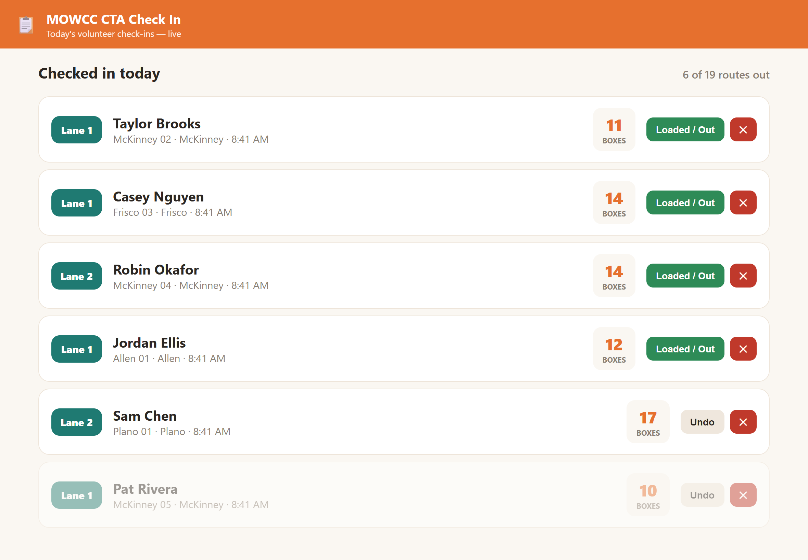
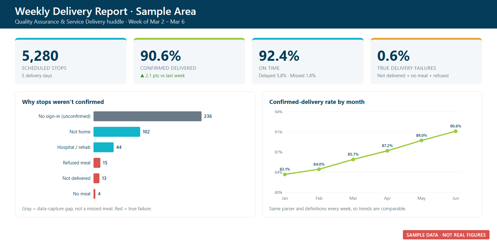
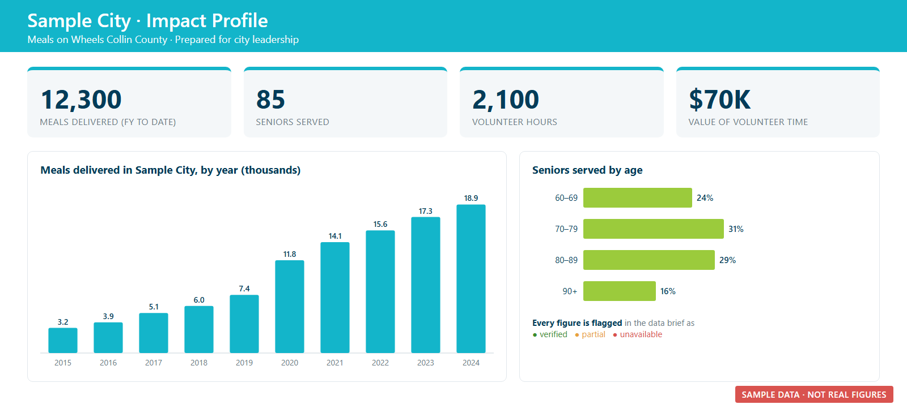
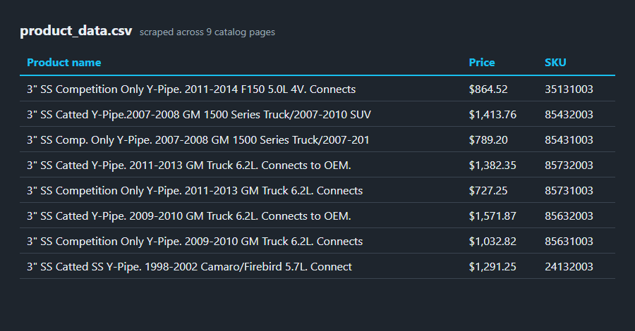

Real-world project · In production
A web app that volunteers use from their own phones. They scan a QR code, get a meal-delivery route assigned
instantly, and see their route details and delivery-app login. Meanwhile, a live dashboard on staff iPads tells
loaders which lane to bring the boxes to. It's used on every delivery day across 90+ routes.
Node.js · Express · SQLite · JavaScript · Excel

Python · Power BI · Excel

Turned messy weekly exports covering about 200,000 meal stops into a consistent QA report and a Power BI
model. I separated app sign-in gaps from real missed meals and sorted routes into risk tiers.

An auditable, deduplicated KPI model and Power BI report for leadership. It gives one defensible "seniors
served" number on the fiscal-year calendar, and its measures are designed so double counting can't happen.
Excel · PowerPoint · JavaScript

City presentations for meetings with mayors, all generated from one template. Every figure is checked
against the source data and labeled verified, partial, or unavailable.
QR-code check-in that assigns delivery routes instantly and shows loaders which lane each volunteer is
in. It's used on every delivery day.
Python · pandas · matplotlib

Merged and cleaned a year of order data, then answered five stakeholder questions. December was the top month
(about $4.6M), San Francisco was the top city, and iPhone + charging cable was the most common bundle. I also
recommended an 11 AM to 7 PM ad window based on when orders peak.

Explored global case, death, and vaccination data. I used joins, CTEs, temp tables, and window functions to
calculate infection and death rates and a rolling vaccination total by country, and saved views for
visualization.

Cleaned a raw real-estate dataset so it was ready for analysis. I filled missing addresses with a self-join, split
addresses into columns, standardized fields with CASE, and removed duplicates with ROW_NUMBER().

An interactive dashboard of Airbnb listings in Washington. It shows where to place your next rental and which
property types to put on the market.

An interactive dashboard of Netflix movies and TV shows from 2008 through 2020, with several views of the
catalog on one page.

Took raw bike-purchase data, cleaned it in Excel, and turned it into a dashboard that shows who is buying
bikes.

Turned a messy customer call list into one a call team can use. I removed duplicates, standardized phone numbers,
split addresses, and removed anyone marked Do Not Contact.

Scraped product names, prices, SKUs, and images from a multi-page online catalog into a clean CSV, with error
handling so one bad listing doesn't stop the run.

Checks a product's live price on a schedule and adds each reading, with a date stamp, to a CSV. Over time that
builds a price history automatically.

A script that sorts a cluttered Downloads folder into sub-folders by file type. It's safe to run again and
again.